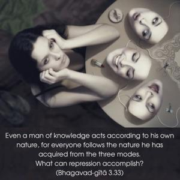
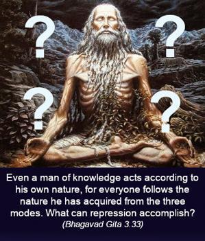
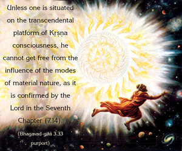

Even a man of knowledge acts according to his own nature, for everyone follows the nature he has acquired from the three modes. What can repression accomplish?



Unless one is situated on the transcendental platform of Kṛṣṇa consciousness, he cannot get free from the influence of the modes of material nature, as it is confirmed by the Lord in the Seventh Chapter (7.14). Therefore, even for the most highly educated person on the mundane plane, it is impossible to get out of the entanglement of māyā simply by theoretical knowledge, or by separating the soul from the body. There are many so-called spiritualists who outwardly pose as advanced in the science but inwardly or privately are completely under particular modes of nature which they are unable to surpass. Academically, one may be very learned, but because of his long association with material nature, he is in bondage. Kṛṣṇa consciousness helps one to get out of the material entanglement, even though one may be engaged in his prescribed duties in terms of material existence. Therefore, without being fully in Kṛṣṇa consciousness, one should not give up his occupational duties. No one should suddenly give up his prescribed duties and become a so-called yogī or transcendentalist artificially. It is better to be situated in one’s position and to try to attain Kṛṣṇa consciousness under superior training. Thus one may be freed from the clutches of Kṛṣṇa’s māyā.